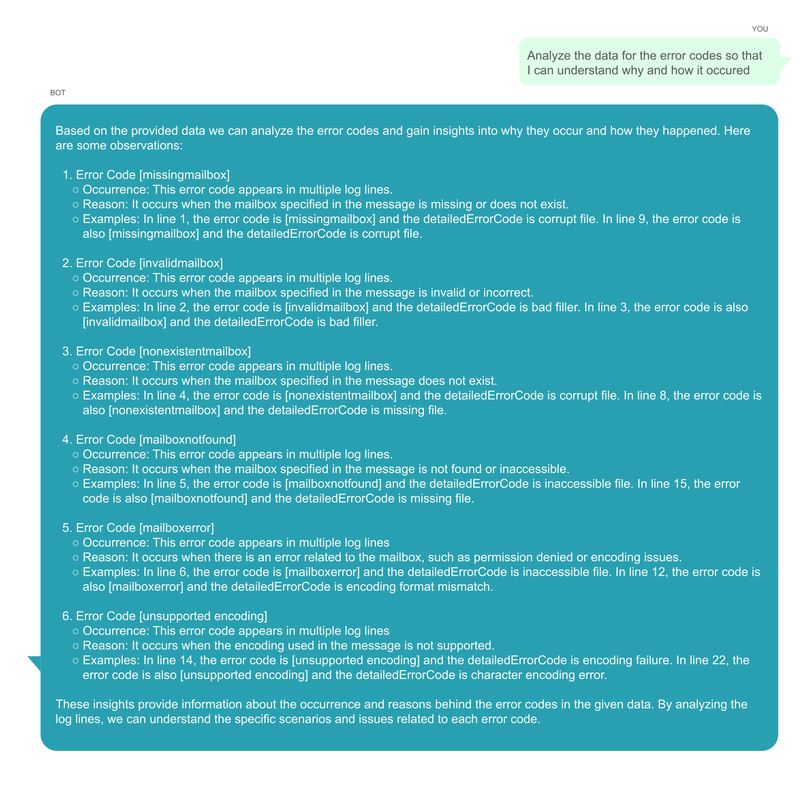

Are you tired of reasoning through mountains of data with slow queries?
LitenAI is a Big Data Copilot to observe, reason and act on large amount
of data using a natural chat interface. It has developed expert AI & accelerated
data agents with workflows to reason and visualize large amount of data. It uses
Generative AI to do today's engineering tasks using natural chat interface. It
accelerates big data query for an interactive data chat experience.
Product
Liten is a Silicon Valley startup championing a cutting-edge multi-agent platform designed
to observe, reason, and act upon data. Its founders possess extensive expertise in AI
and data applications and have a proven track record of accelerating platform development
for superior performance. They bring valuable experience in optimizing Apache SparkTM
performance for large-scale distributed analytics.
Liten platform enables 100x efficiency by automating engineering work using AI.
The platform provides a conversational interface to data as a service on public
cloud. It can be used on a standalone installation or, within your jupyter
notebooks or, can be accessed from a slack chat using Liten bots. Its domain
GenAI platforms are pre-trained, use best in class data and AI tools. As customers
use the tool, it learns and fine tunes itself to become smarter.
Multi Agent Platform with AI and Data Agents
Liten's multi-agent platform orchestrates data and AI tasks based on workflows inferred
by prompts. It automates data reasoning to enhance productivity and customer satisfaction.
Leveraging both best-in-class foundational models, its AI agents are fine-tuned
to customer data, ensuring optimal performance. Liten data agents
are big data base clusters that can handle petabytes of data and are integrated
into the platform. Its data lake storage integrates log data with knowledge data in
an open delta lake house for an easy and efficient storage. It can read or stream data
inputs from many data sources.
User Interfaces
Liten offers different types of interfaces to chat with data to observe, reason
and visualize.
Modern enterprises are at a cross road with the advent of Generative AI.
LitenAI mission is to help enterprises tap into the vast data and knowledge within
these companies. For that mission, it has developed a big data copilot with integrated
Gen AI agents and big data base clusters to enable much faster response times.
Best way to experience this is to try it out at
LitenAI playground
Here are a few use cases where Liten is able to help customers solve
big data reasoning.
Turbocharge productivity
At one of our client sites, training new engineers necessitated the presence
of experienced ones. Liten optimized this process by leveraging existing
playbooks and cloud server datasets to refine the models. Additionally,
it incorporated customer-specific prompt engineering to elicit expert,
human-like responses from the Liten platform.
A newly onboarded engineer could inquire about debugging status code errors,
various log files, or inquire about the most significant issues from the
past month and receive expert, human-like responses.
Natural language-based reasoning
Customers often feel hesitant about learning a new query language. The Liten
platform addresses this concern by offering a natural language interface for
query specification. Its code AI agent translates these specifications into SQL
queries, enabling customers to use them seamlessly. Moreover, the platform
integrates sophisticated visualization tools, empowering users to create and
visualize cloud-based dashboards effortlessly. All these functionalities are
orchestrated through a master agent, accessible via a unified natural language
interface.
Liten's models serve as invaluable aids to all cloud engineers—CIOs, SREs,
DevOps engineers, and more—acting as co-pilots to significantly enhance
productivity.
Streamline Event publishing
In one of our customers, many alerts are being issued for the same event.
Liten can streamline the flow. For this, it stores the alerts. Using its models,
it can detect similar events and produce consolidated messages in Slack bots.
The flow looks like this
Sample user reasoning sessions
Liten possesses the capability to comprehend diverse log file formats. Its
adaptable data model allows for seamless extensions, facilitating the comprehension
of customer-specific data. The finely-tuned models within Liten are adept at
understanding domain-specific knowledge. Moreover, Liten can fine-tune models
using customer data exclusively for their specific use cases.
Displayed below are a few chat sessions that serve to demonstrate the functionality
and workings of Liten.
Server log reasoning
Liten models are finely tuned to execute server log reasoning with an
expertise akin to an expert. Here are several examples showcasing the range of
analysis it can perform.
Internal server error analysis
Users have the ability to upload their data for analysis through Liten's platform.
Additionally, Liten manages SQL tables and ingests data into these tables. This
enables customers to execute queries, create visualizations, and deduce insights
from the data. Moreover, Liten conducts advanced analysis and coordinates both data
and AI agents to fulfill various tasks for the users.
Liten is capable of analyzing data and offering error analysis as part of its
functionalities.

Customers performed various tasks using chat interfaces like -
Linux Log Expert Analysis
The Linux operating system generates diverse log files including system logs,
application logs, and event logs. Liten comprehends these log files and has the
capability to analyze failures, offering potential solutions accompanied by code.
Analysis of syslog error
Interpreting Linux system logs can be challenging. Liten stores these logs and
conducts comprehensive analyses to derive valuable insights. Refer to the following
chat for an example of the analysis.
Users have the ability to inquire about different aspects of Linux log data, such as
Summary
Liten streamlines the analysis of extensive datasets through innovative AI
and accelerated data agents, simplifying complex reasoning tasks. It unlocks
pioneering solutions by harnessing next-generation tools. To experience its
capabilities firsthand, it's available for trial now.
Accelerated Big Data Observation
Modern enterprises are experiencing an unprecedented surge in data creation, where vast
amounts of information are generated constantly. This expansion coincides with significant
advances in cloud technology, marked by disaggregated systems. While there are significant
and continuous hardware advancements, the organizations struggle to meet the ever increasing
demands for performance improvements, reduction in cycle times and to save on computational
and cloud costs. The organizations are also in a race to combat climate change and meet
their sustainability targets.
Employing a unique tensor representation, the data agents within Liten AI can accelerate
the queries by a huge multiplication factor of 50-100x thus helping the organizations
achieve the twin goals of performance with sustainable computing while also saving
costs in a competitive environment.
Accelerating Data Agent by 100x
Current relational and tabular data platforms lack adaptation to leverage emerging
technologies. Employing a unique tensor representation, the data agents within Liten
accelerate queries by a factor of 100. They transform incoming data into a
tensor-formatted columnar structure, optimizing processor and accelerated solutions
to enhance the speed of existing queries. Liten seamlessly integrates into Spark
clusters and can efficiently ingest data from various data warehouses.
Benchmark TPCH Query
The Transaction Processing Performance Council (TPC) sets industry-standard benchmarks
for data and query performance. TPC BenchmarkTM H is a decision support benchmark.
Benchmark tests are conducted for Query 5 and Query 6 of TPCH because they have
complex joins and result in longer query plans. These tests involved utilizing
both a standalone Spark cluster and a separate Liten service. Liten enhanced query
performance through a tensor-based engine and preserved an in-memory cache of
tensors to eliminate redundant creation processes.
TPCH Query 5
This query compiles the revenue generated from local suppliers.
Liten expedites this process by eliminating the necessity for joins. Instead, tensor
data replaces joins with more straightforward multi-dimensional lookups. This
streamlines operations by minimizing shuffle operations, resulting in a significant
acceleration of the query.
The accompanying diagram illustrates the plan and showcases Liten's handling of
this process.
TPCH Query 6
This query assesses the potential revenue growth achievable by removing company-wide
discounts.
Liten notably streamlines the query plan, as illustrated in the diagram below.
In Liten, the query plan is simplified along with accelerated scan/aggregates. On a
standard Azure DS2 VM, Spark 3.2 required 16 seconds to execute, whereas Liten
completed the task in a mere 0.06 seconds, delivering over a 100x performance
improvement.
Customer Scenarios
Liten seamlessly operates within existing or new SparkTM clusters as a service.
Once activated, it utilizes jar files in Spark tasks to perform accelerated functions
through Liten. Jobs executed by customers maintain their settings but experience
enhanced performance. Liten accelerates various tasks such as filters and joins,
typically found in commonly used SQL query plans. Additionally, Liten can construct
customized accelerated UDFs (User Defined Functions) tailored to individual customer
requirements. These UDFs can be applied within queries or used as standalone functions,
offering valuable solutions for specific customer use cases.
Sample customer use case for cloud data analysis
One of our clients hosts extensive network traffic data in the cloud, reaching
volumes that can span into petabytes. To address company needs and inquiries,
they regularly query these files to detect policy violations. However, this process
became notably slow, hindering their ability to meet service level requirements.
Cloud Data Lake
Liten offers a big data solution capable of storing limitless log data. It employs
industry-standard open data lake format delta-lake for data storage. Specifically,
in this scenario, data is stored in partitions categorized by traffic timestamps.
Accelerated Queries
To tackle this, Liten incorporates an acceleration layer by storing data in a
tensor-formatted file. This diminishes the necessity for cross-referencing and
joining with additional data dimensions. As a result, Liten expedited the customer's
query, delivering the sought-after policy answers promptly.
Big data Acceleration
Liten solutions enhance Spark performance for large-scale distributed analytics.
They can be utilized either as a standalone service or added to an existing customer
cluster as an additional service.
About
Liten, a Silicon Valley startup, champions a cutting-edge multi-agent platform designed
to observe, reason, and act upon data. Its founders possess extensive expertise in AI
and data applications and have a proven track record of accelerating platform development
for superior performance. They bring valuable experience in optimizing Apache SparkTM
performance for large-scale distributed analytics.